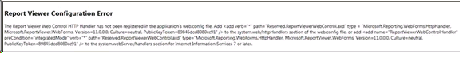

No
You can set the display properties for the Form List Web Part in the Custom Properties section of the web part.
Note: To access the Forms Web Part page, you must have Can Fill Form permissions in AVEVA Work Tasks.
For more information about AVEVA Work Tasks Web Part properties, see AVEVA Work Tasks Out-of-the-Box Web Parts section in the User Guide.
Report Viewer configuration error
The following error message appears when you try to view a Form that contains a Report Viewer control.

For AVEVA AVEVA Work Tasks 2014 R2 SP2 P01 or earlier
<add verb="*" path="Reserved.ReportViewerWebControl.axd" type="Microsoft.Reporting.WebForms.HttpHandler, Microsoft.ReportViewer.WebForms, Version=11.0.0.0, Culture=neutral, PublicKeyToken=89845dcd8080cc91" validate="false" />
For AVEVA AVEVA Work Tasks 2017 and above versions
<add verb="*" path="Reserved.ReportViewerWebControl.axd" type="Microsoft.Reporting.WebForms.HttpHandler, Microsoft.ReportViewer.WebForms, Version=12.0.0.0, Culture=neutral, PublicKeyToken=89845dcd8080cc91" validate="false" />